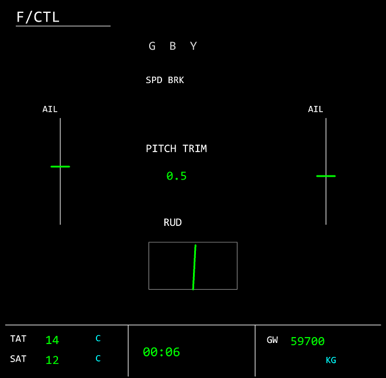

Obserwuj lotki, ster wysokoœci, ster kierunku, spoilery i pitch trim. Dostêpne flagi ELAC/SEC oraz zasilania hydraulicznego opisuj¹ zaplecze uk³adu. Wychylenie powierzchni nie jest tym samym co pozycja joysticka ani komenda FD. Do porównania reakcji wybierz odpowiednie parametry na wykresach. Po³o¿enia nie dowodz¹ sprawnoœci komputera bez jego zapisanych stanów.
